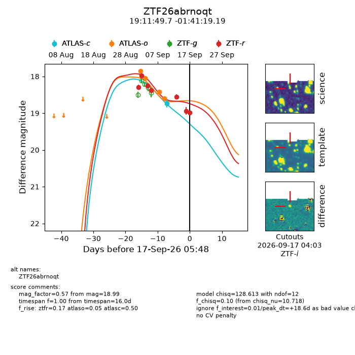
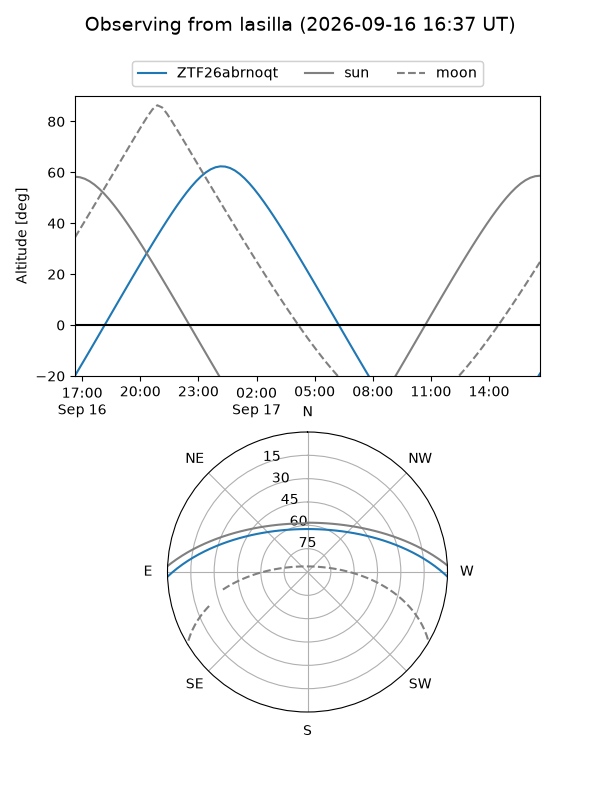
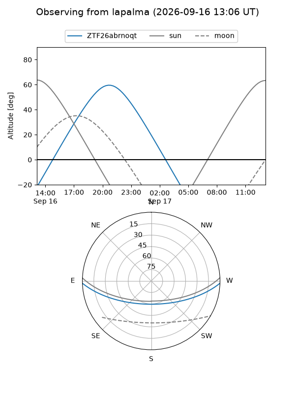
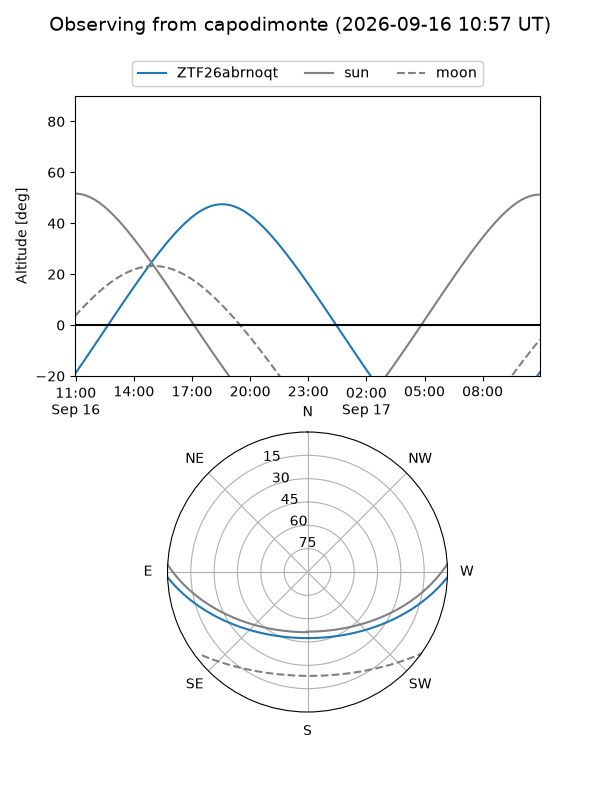
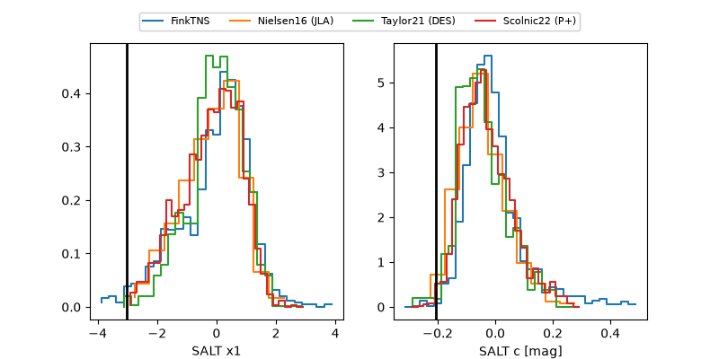

ZTF26abrnoqt
Target ZTF26abrnoqt at 2026-09-17 05:50
Aliases and brokers:
FINK-ZTF: ztf.fink-portal.org/ZTF26abrnoqt
Lasair-ZTF: lasair-ztf.lsst.ac.uk/objects/ZTF26abrnoqt
ALeRCE-ZTF: alerce.online/object/ZTF26abrnoqt
Direct TNS query: direct search
alt names
ZTF26abrnoqt (ztf,fink_ztf)
Coordinates:
equatorial (ra, dec) = 287.9572,-1.68866
equatorial (HMS+DMS) = 19:11:49.73,-01:41:19.19
galactic (l, b) = (33.7532,-5.30646)
Flags:
peak dt: +18.6
Photometry:
last atlasc=18.74, atlaso=18.60, ztfr=18.99
1 atlasc, 4 atlaso, 7 ztfr detections
Lightcurve

Visibility



Additional plots
